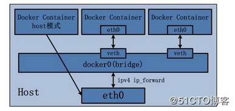

docker网络默认时使用NAT模式的，结构图如下

这张图上有两种模式。第一个容器是host模式，该容器的的IP和主机是相同的，和主机共享网络。第二个是bridge模式。
主要说一下bridge模式。
在docker内部，软件会生成一个虚拟网关，形成一个虚拟的网络。容器分配的IP是这个虚拟网关分配的。外网无法访问，除非在创建容器的时候创建端口映射。
查看docker网络
1 | docker network ls |
上边是docker的三种网络模式。
在主机上执行ip add命令可以发现一条信息：
1 | 3: docker0: <BROADCAST,MULTICAST,UP,LOWER_UP> mtu 1500 qdisc noqueue state UP group default |
这是docker创建的虚拟网卡，这里以虚拟网卡为网关。
bridge通信原理
容器将数据发送到虚拟网卡上，然后通过虚拟网卡发送出去。外网访问也是同理。
端口映射
因为有虚拟网络存在，所以外网因为有内网隔离无法访问到容器。我们需要添加端口映射。
1 | docker run -itd -p 主机端口:容器端口 image_id |
这样的话外网就可以访问到相应的端口了。
也可所以使用-P参数，就是随机分配端口。
容器互联
创建容器时添加–link参数，在新容器的hosts文件添加原容器的解析。